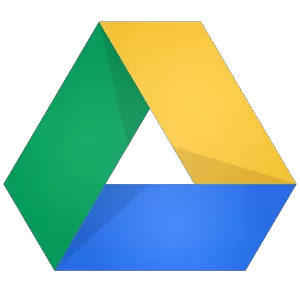

Who is Steve?
- Ping-Pong Electronic Engineer
- Working in IT industry for 20 years
- 14 years consulting and still learning
- Connector & Community guy
- Founder of GCTechSpace
- open tech incubator & accelerator in Robina, Gold Coast
- Current pet project
- using off-the-shelf mobile devices for industrial & robotic control
A quick comparison
(GFLOPS = Giga Floating-point Operations Per Second)
- 1976 - Cray 1, Los Alamos National Laboratory - 0.25 GFLOPS
- 1985 - Cray 2, Lawrence Livermore National Laboratory - 3.9 GFLOPS
- 1993 - CM-5, Los Alamos National Laboratory - 59.7 GFLOPS
- 1993 - Intel Paragon, Sandia National Laboratories - 143 GFLOPS
- 2012 - Iphone 5 (A6) - 25.5 GFLOPS
- 2012 - Ipad 4th Gen (A6X) - 76.8 GFLOPS
- 2013 - Samsung Galaxy S4 - 51.2 GFLOPS
- 2010 - Intel Core i7 - 100 GFLOPS
- 2010 - NVIDIA Tesla GPU - 900 GFLOPS
- 2012 - Cray XK7 - 18 PFLOPS
- 2013 - New Chinese Super Computer: Tianhe-2 - 54.9 PFLOPS
Fashion!
Mobile: the biggest fashion item
- Design for Obsolescence
- Perceived Obsolescence
- Sustainable?
- Features of new devices are still far from mainstream. eg
- NFC
- QI Charging
- Miracast
- Touchless input (aka voice)
- storyofstuff.org/movies/story-of-stuff
- Millenials/GenY now rate a smart phone as their number one prized possession (above a car!)
World Wide Smartphone Sales (1000s)
Mobile Operating Systems
- IOS
- iPhone,iPad, iPod
- Entire controlled by Apple. All apps through AppStore
- Android
- Google Nexus 4,5,7,10
- Samsung Galaxy S2,S3,S4, Galaxy Tab
- ASUS, LG, Motorola, Sony, Amazon Kindle
- Driven by Google but a certain amount of freedom
- Windows 8
- Mainly Nokia, also HTC
- Surface with RT, Surface Pro - lots of blurring
- Others: Blackberry, Bada, Tizen, Sailfish, Ubuntu Touch, Firefox OS, ChromeOS
So how to avoid this?
Getting the most out of your devices
- Tune ups - Android Assistant/Task killer
- Re-installs - restore, cloud backup
- Remove unnecessary and unused apps (80% apps not used)
- Turn off things you don't use. eg. push notifications, ping, location services, indexing, android: live wallpaper & widgets
- Change your battery (even if you can't see it!)
- Add more memory if you have a card slot
- If it's broken... get a second opinion! (or check ifixit.com)
- If it really is broken - please recycle or reuse
- And most importantly.....
- .....USE IT!
Apps Apps everywhere!
Choosing which apps to use?
- Try to use cross platform apps
- Sharing with colleagues & clients
- What happens if you switch?
- Don't be overwhelmed
- Ask your friends
- Use social media
- Use sites like alternativeto.net and appcrawlr.com
- Where is your data?
- Cloud
- Synced to PC
- On device
- Intranet
Some Apps for you. YES you!
Chat/Voice/Video Messaging
- Google Hangouts
- Skype (careful!)
- Facetime
- Sipdroid
Group Messaging/Collaboration
- Hipchat
- Google Plus
- Flowdock
- Chatter
- Kandan
Documents
- Google Drive 
- Office 365
- Evernote
- Dropbox

- Documents to Go
Notes
- Evernote
- Springpad
- OneNote
- Keep
- Skitch
- MindMeister
Serious Social Media
- Google Plus
- Meetup
Others
- Livescribe
- Swiftkey
- ...or buy a real keyboard!
- Xero
- Grafio
- or go low tech....
- Use your camera with whiteboards, notes - then annotate and share
Mobile development
- Native iPhone/iPad/iPod: Objective C
- Native Android: Java/C
- Native Windows Mobile: .net
- Cross Platform: many toolkits, usually Javascript/HTML
- Mobile Web: HTML, Javascript + responsive design
- Develop for mobile first: 20% of web access from mobile devices and rising rapidly
- You are possibly your best customer
- Think about apps you could develop for your industry
- You have much better insight than others stabbing randomly in the dark
- Scratch your own itch, what is it worth to take away a pain?
- Be prepared to invest in a good developer
Thank You!